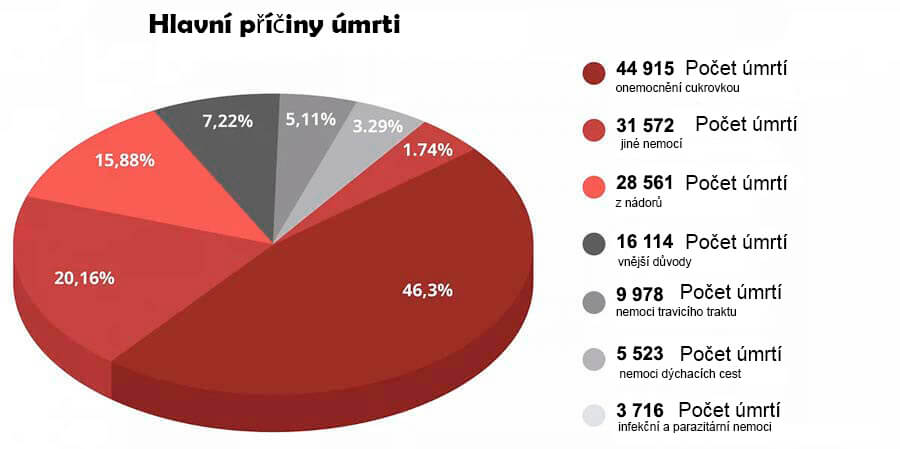

DESCOBRIMENTO PROIBIDO: Em 7 semanas, os glóbulos vermelhos artificiais aliviam a diabetes, reduzem os níveis de açúcar e aumentam a imunidade!
Nas filmagens do programa televisivo, houve um constrangimento, que desprezou os melhores médicos do país. Um dos especialistas convidados de repente começou a falar fora do guião. Na sua declaração, ela surpreendeu o público no estúdio, especialmente às autoridades médicas.
A cirurgiã cardíaca declarou abertamente:Vocês estão sempre a falar do vírus, mas vocês ignoram o problema de que sofrem mais de 1,3 milhões de pessoas cada ano''! Por que ninguém está a falar sobre as doenças endócrinas? Por que ninguém fala que já existe um remédio para diabetes?»
A diabetes! Esta é a principal assassina das pessoas. E todos vocês estão a fingir que deve ser assim, sem notar as ferramentas avançadas que conseguem resolver este problema.
A diabetes é considerada uma das doenças mais perigosas. Ao contrário de muitas outras doenças que surgem, esta não leva a alguns problemas de saúde temporários, mas sim desenvolve-se gradualmente, e leva a pessoa gradualmente para o túmulo. A diabetes mellitus é a causa de milhões de mortes dolorosas. Parece uma bomba-relógio que não necessariamente explode imediatamente, mas tem 100% de chance de explodir mais cedo ou mais tarde. Além disso, a situação é tal que simplesmente não há sintomas que indiquem o aparecimento de complicações fatais. Hoje uma pessoa pode ser saudável, mas amanhã não sentir a sua mão, a sua perna começar a apodrecer ou um tumor cancerígeno crescer na sua cabeça. E vocês estão confundidos e introduzem medidas incríveis devido a uma doença quase assintomática, que, aliás, não apareceu agora, e dificilmente desaparecerá.

“As pessoas estão a morrer não por causa do vírus, mas por causa da diabetes e das complicações que causa! Lembrem-se disso de uma vez por todas!” - argumentou Ana Sousa, uma das convidadas especialistas, mas outros participantes literalmente lançaram-se sobre ela, amordaçando-a.
As estatísticas são chocantes! A pandemia ceifou 25 mil vidas e quase 50 mil pessoas morreram da diabetes no mesmo período.
E o mais engraçado e triste é que 75,87% dos casos graves de complicações de vírus são pessoas com a diabetes! Se eles não tivessem esta doença, que destrói impiedosamente o sistema imunológico, eles tolerariam tudo de forma assintomática. E então este é o principal grupo de risco. E mais uma vez, ninguém fala sobre isto, porque vai surgir uma pergunta - o que vocês estão a fazer para tratar esta doença insidiosa?
A confusão começou no estúdio. Os especialistas - os médicos de clínicas de Lisboa começaram a discutir, interrompendo uns aos outros. A transmissão foi interrompida à pressa e um bloco de anúncios foi lançado rapidamente. Ana Sousa foi expulsa do estúdio pelos guardas.
Este episódio foi cortado do ar. Mas o público no estúdio lembrou-se deste incidente por muito tempo.
Decidimos conduzir a nossa própria investigação e encontrar este especialista.
Ana Sousa é uma médica da mais alta categoria, phD, professora, principal
especialista em complicações vasculares da diabetes mellitus.
Ana, parece que todos os seus colegas sabem do escândalo na TV. Como você não teve medo de tal ato?
- Eu entendi todos os riscos, mas simplesmente não conseguia mais ficar calada. Você não pode fazer nada e não oferecer um tratamento específico. Eu sou médica, efetuei o Juramento de Hipócrates e sigo-o.
Estou feliz que você tenha me contactado, pois posso repetir as minhas palavras aos seus leitores. A pandemia vai passar, vai aparecer vacina, o mundo vai sobreviver, como qualquer pandemia anterior. Mas o vírus da ganância e da corrupção permanecerá connosco, temo que para sempre. As vacinas ainda não foram inventadas para este vírus.
– De que exatamente você está a falar?
– Do facto de haver doenças que na nossa medicina costumam ser tratadas por muitos anos. Eu trabalho com as doenças endócrinas, na reabilitação de pessoas que sofreram complicações graves causadas pela diabetes. E no meu campo, o engano é comum.
Tenho a certeza que é a mesma coisa no tratamento do sistema musculoesquelético, do trato gastrointestinal, e tudo pode ser tratado de acordo com os sintomas, amenizando o quadro, mas sem devolver a saúde plena.
E é porque as empresas farmacêuticas e os seus representantes médicos, que subornam médicos por todo o país. E agora, quando as pessoas são intimidadas o tempo todo, as empresas ficam à vontade. Vendem os exames, desinfetantes, remédios para cada sintoma separadamente. E em caso de morte, culpam tudo na pandemia. Fico enjoada a ver tudo isso.
A diabetes não é tratada
– Então você quer dizer que todos os medicamentos modernos para a diabetes são ineficazes?
Os medicamentos para diabetes que são oficialmente prescritos para as pessoas têm uma função importante - bombear dinheiro dos bolsos dos pacientes para os bolsos dos magnatas farmacêuticos.
Estas são drogas legais. Ouve, o paciente toma um comprimido, e o seu estado melhora. O medicamento para de funcionar e o açúcar no sangue aumenta novamente. É assim que todas as drogas funcionam. Para se sentir bem, você precisa procurar uma nova dose.
O principal é entender isso: numa emergência, os medicamentos químicos são necessários e importantes. Eles salvam as vidas quando é necessária ajuda urgente. Na Primeira Guerra Mundial, por exemplo, a heroína foi usada no campo de batalha para evitar que os feridos morressem de dor.
Mas se você toma comprimidos constantemente, eles destroem o corpo. Assim como a heroína. Não tão rápido, mas o princípio é o mesmo. E para se livrar dos efeitos colaterais, mais comprimidos serão vendidos. E mais. E mais. Quanto mais, melhor para as farmácias e o setor farmacêutico.
– Mas, afinal, as pessoas vivem com os medicamentos por anos
– Os viciados também podem viver muito tempo. Mas que tipo de vida é essa?
Quando aumenta a pressão. Quando não são velhos, com pouco mais de 50 anos, ganham prostatite e perdem potência. Quando surge a fadiga crônica e obesidade, as pernas começam a inchar, mal dá para andar, os dedos ficam dormentes. Depois, há distúrbios gastrointestinais e pedras nos rins, devido à intensa excreção de sais e açúcar.
Algumas pílulas, com uso de longo prazo, geralmente são oncogênicas. Veja as estatísticas sobre o cancro - esta é uma verdadeira epidemia.
Não estou nem a falar de ninharias como problemas de sono, zumbido, perda de visão. A lista pode ser longa. Há apenas uma razão - um nível elevado de glicose no sangue e, como resultado, diabetes, que ninguém cura. Embora a ferramenta já esteja aí e mostre excelentes resultados.
Um remédio para a diabetes que não estará disponível em farmácias.
– Nas filmagens do programa televisivo, a senhora tentou falar sobre um remédio inovador para diabetes, mas foi expulsa do estúdio. Qual é este remédio? Por que as farmácias reagem ao seu nome como vampiros à luz do sol?
– Comecei a falar sobre o produto biológico . Este é um remédio único baseado em vitaminas de plantas vivas.
é um desenvolvimento do centro de biologia molecular. Também é comumente referido como Células vermelhas do sangue artificiais. Porque o estimula a produção de novos glóbulos vermelhos, que aumentam a resposta à quebra da glicose em mais de 7 vezes! O que leva à normalização dos níveis de açúcar no sangue.
normaliza o metabolismo da glicose intracelular por anos. Não precisa ser feito o tempo todo. Em apenas 7 semanas, ele cura o diabetes, e o nível de açúcar no sangue será de 4,5 mmol / L pelos próximos 5 anos.
Pelo desenvolvimento do , a nossa equipe de cientistas recebeu um prêmio internacional em biologia terapêutica. É o avanço inovador no tratamento da diabetes.
Parece que, após tal reconhecimento, as farmácias deveriam se candidatar ao direito de vender . O estado deve adotar esse medicamento. Mas não. Silêncio completo. Ninguém pareceu notar o avanço.
E os representantes do ramo médico tratam o medicamento com ódio. Eles têm centenas de nomes de medicamentos, vendas e planos de receita. E estes planos não podem ser cumpridos por um único medicamento. As pessoas após 7 semanas de tratamento com esquecem o seu caminho para a farmácia.
É por isso que há tanto ódio por . Não adianta odiá-lo. Mesmo assim, há reconhecimento internacional, certificados, artigos científicos e milhares de pacientes satisfeitos. Portanto, uma estratégia de boicote foi escolhida. Fingir que este medicamento não existe. E quando comecei a falar sobre ele no ar, isso causou uma agressão flagrante contra mim.
Lançar a autocura do corpo
– Como funciona o ?
O principal objetivo do é restaurar a função do pâncreas em 100%. Esta é a base sobre a qual a sua saúde fica.
restaura os vasos sanguíneos em 3 estágios:
- Restaura os receptores de insulina nos tecidos do corpo humano, normalizando assim a produção de insulina no corpo
- Reduz o açúcar no sangue após os primeiros dias de uso
- Restaura o nível de potássio complexo e ao mesmo tempo gera células imunológicas especiais que iniciam o processo de regeneração do pâncreas
inicia o processo de regeneração e renovação de todos os tecidos do corpo, desde os órgãos internos até os vasos sanguíneos. Isso permite que você se livre de todos os danos que o corpo recebeu durante a doença.
Este processo de autocura chama-se autorregeneração . Esses mecanismos são definidos pela natureza e o é um catalisador, uma chave que inicia a autorregeneração.
Livre-se de 7 doenças em 7 semanas
– O que você receberá após o tratamento com o ?
1. Normalização dos níveis de glicose
O medicamento tem um efeito extremamente útil, ou seja, reduz a resistência à insulina. Esta é uma propriedade maravilhosa. Os componentes biologicamente ativos do medicamento penetram diretamente nas células dos músculos, gordura e fígado e as estimulam para que comecem a responder melhor à presença do hormônio no sangue. Na medicina, esse processo é denominado formação de células secundárias. Como resultado, com o tempo, as células começam a consumir mais glicose ativa, o que leva a uma diminuição na sua concentração no sangue. Esta é a maneira mais segura de o corpo consumir glicose.
2. Restauração de vasos sanguíneos
A principal ação de é não só remover o açúcar do sangue, mas também normalizar os níveis de glicose. Também dissolve o açúcar que já penetrou nas paredes do vaso. Eles, como se tivessem se libertado do gelo, adquirem novamente a capacidade de se contrair e se esticar. Os coágulos sanguíneos dissolvem-se e os vasos sanguíneos são eliminados. Os pequenos capilares são restaurados. Como resultado, a pressão arterial de uma pessoa não aumenta, a fraqueza e a sonolência desaparecem e a cicatrização de feridas e cortes melhora.
3. Melhoria da condição da pele, ossos e músculos
Mesmo a pele gravemente danificada é restaurada. As úlceras cicatrizam, a pele para de supurar e seca. O mesmo acontece com os ossos, a sua composição normal é restaurada, eles deixam de ser frágeis. A recuperação ocorre em todos os tecidos, os músculos tornam-se elásticos.
4. Melhoria da acuidade visual
Mesmo a visão gravemente danificada começará a se recuperar gradualmente.
- A acuidade visual melhora de 0,5 para 2,1 unidades
- A pressão do olho está normalizada
- Reduz os sintomas da cataratas
5. Livrar-se do excesso de peso
O excesso de peso é o que agrava o estado de um paciente com diabetes mellitus de 4 a 5 vezes. Portanto, uma das ações da é a perda de peso. Isto acontece por dois motivos. Primeiro, as células começam a converter mais ativamente o açúcar em energia. Em segundo lugar, o complexo contém um forte extrato concentrado de Helianthus tuberosus, que é um poderoso queimador de gordura natural.
6. Normalização da potência
Muitos diabéticos são impotentes. Uma das ações surpreendentes de é normalizar os níveis de testosterona e restaurar a potência saudável. Mesmo na venerável idade de 70 anos, os homens ficam surpresos ao notar que a força masculina voltou para eles.
7. A imunidade começa a funcionar
Melhora o suprimento de sangue para a medula óssea, que está envolvida na produção de células do sistema imunológico. Isso leva a um aumento nas defesas do corpo.
A imunidade não é apenas um protetor contra vírus. A principal função da imunidade forte é proteger contra as células cancerosas. A imunidade forte reconhece e destrói as células cancerosas a tempo. Não deixa tumor aparecer.
Uma imunidade que funciona pelo menos 50% já é uma barreira intransponível para os vírus. E isto também é muito importante hoje.
O presidente do sindicato dos farmacêuticos desligou ao ouvir sobre a .

José Carlos Silva Presidente do Sindicato das Redes de Farmácia
Portuguesas.
Ligamos para o farmacêutico chefe e queríamos saber por que nenhuma das farmácias tinha .
– José Carlos, bom dia! Se faz favor, poderia comentar, por que as farmácias ignoram o ? O Sr. já ouviu falar dele?
– Por que você está a fazer provocações !? Não vou responder a estas perguntas!!! Não é da sua conta!
– E desligou...
Como obter o
– Após tal conversa com o farmacêutico-chefe do país, ficou claro que o medicamento não estava e não estaria disponível nas farmácias. Mas é possível comprá-lo, não é?
– Sim, toda a gente pode solicitar o online diretamente da fábrica.
– Por que o é disponível apenas online?
É assim por três motivos:
- Garantia da Qualidade. O é enviado diretamente da fábrica para o cliente
- Proteção contra intermediários, para que ninguém possa ganhar 100-200-300 euros na revenda
- Entrega rápida por CTT expresso
Desconto regional para as pessoas com mais de 47 anos
Todos eles agora contam com um programa de fundo de apoio social. Sob este programa, você pode pedir o com desconto. Isso foi feito como parte de um programa preferencial de prevenção do diabetes.
O desconto é concedido principalmente a pessoas com mais de 47 anos, residentes em regiões com elevada situação epidemiológica.
Portanto, eu recomendo: não perca o seu tempo! Não haverá uma segunda chance. Não se sabe quanto tempo o programa vai durar, ou quanto tempo vai estar disponível o estoque do .
Obtenha o agora!
Você só precisa de um telemóvel para obter o sob o programa preferencial.
Indique o seu número no formulário de inscrição e clique no Obter o .
Importante! Pode fazer apenas 1 aplicação de 1 número de telefone!
Agora os pedidos são aceitos e processados 24 horas por dia . Porém, devido à grande carga de trabalho, talvez seja necessário esperar um pouco.
Atenção!
Certifique-se de que o site tenha um holograma de segurança:
O holograma de segurança é 100% de garantia de qualidade. Quer dizer que você está no site oficial e que o real será enviado a você e o aconselhamento e suporte necessários serão fornecidos.
Comentários